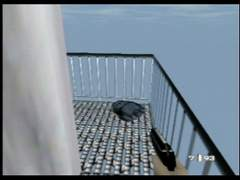
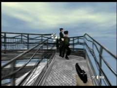
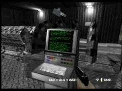
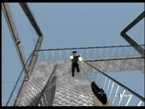
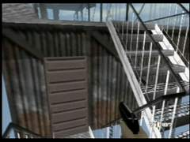

|
| Soluce
Goldeneye : Cradle |
|
| Soluce
Goldeneye : Cradle |
Un Dernier Niveau stressant au possible, avec pleins de Janus Special Forces ! Commencez par récuperer un Gilet derriere vous dans l'angle de la Tour par laquelle vous etes arrivé. Y en dans tous les Niveaux de Difficulté ! Yes ! |



| Détruire
la Console : Tous Niveaux |
Laissez venir des Gardes pour vous faire plein de Munitions. Vous en aurez besoin en 00 Agent croyez-moi. En plus vous avez assez de temps pour exploser la Console alors ça va. Explosez les 2 Drone Guns, puis la Console. Vous devriez appercevoir Trevlyan qui se sauve, shootez-le ! Il sortira une phrase... |



| Tuer
Trevelyan : Tous Niveaux |
Continuez et vous le verrez en bas de l'Escalier. Tirez-lui desus et il dira une phrase. Le Truc est qu'il sorte une phrase à chaque fois que vous le touchez, jusqu'a ce qu'il dise la Derniere Phrase, que la musique change, et que vous deviez Finir le Travail". Attention : il laisse des Grenades derriere lui ! Gaffe aux Janus Special Forces aussi !! |



Pour le tuer, voilà une bonne méthode. Touchez-le dès que vous le voyez, puis lorsqu'il se sauve en bas de l'Escalier, touchez-le encore, puis rebroussez chemin et allez l'attendre dans l'autre Barraque, exactement au meme endroit ! Au fur et à mesure, il vous demanderas de le suivre en bas. Une fois sur la plate-forme, contournez-le pour esquiver son AR33, et collez-lui un pruneau dans la Tete ! |